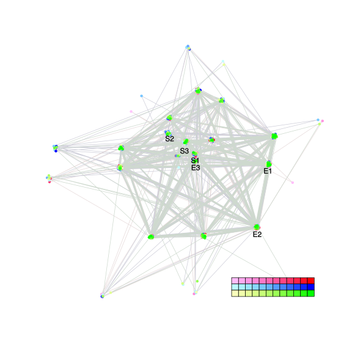
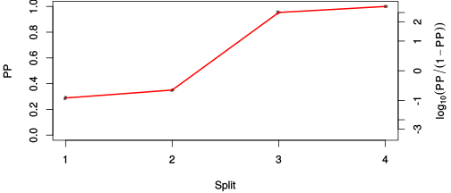
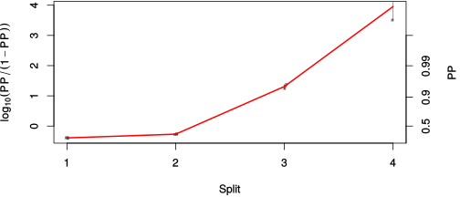

| chain # | burnin | subsample | Iterations (remaining) | command line | subdirectory | directory |
|---|---|---|---|---|---|---|
| 1 | 10000 | 1 | 90000 | /usr/local/bali-phy-3.0-beta2/bin/bali-phy cat_E6_E7_AA_red3_AvesTurtles_PePV1.fas -s 65932 -n cat_E6_E7_red3_AvesTurtles_PePV1_c1 | cat_E6_E7_red3_AvesTurtles_PePV1_c1-1 | /home/willemse/data/trees/BaliPhy |
| 2 | 10000 | 1 | 90000 | /usr/local/bali-phy-3.0-beta2/bin/bali-phy cat_E6_E7_AA_red3_AvesTurtles_PePV1.fas -s 31652 -n cat_E6_E7_red3_AvesTurtles_PePV1_c2 | cat_E6_E7_red3_AvesTurtles_PePV1_c2-1 | /home/willemse/data/trees/BaliPhy |
| 3 | 10000 | 1 | 90000 | /usr/local/bali-phy-3.0-beta2/bin/bali-phy cat_E6_E7_AA_red3_AvesTurtles_PePV1.fas -s 26543 -n cat_E6_E7_red3_AvesTurtles_PePV1_c3 | cat_E6_E7_red3_AvesTurtles_PePV1_c3-1 | /home/willemse/data/trees/BaliPhy |
| P(data|M) = -4015.019 +- 0.473 | Complete sample: 106 topologies | 95% Bayesian credible interval: 16 topologies |
Phylogeny Distribution

| Partition support: Summary |
| Partition support graph: SVG |
{kind=link}
| 50% consensus | Newick (+PP) | SVG | |||||
| 66% consensus | Newick (+PP) | SVG | |||||
| 80% consensus | Newick (+PP) | SVG | |||||
| 90% consensus | Newick (+PP) | SVG | |||||
| 95% consensus | Newick (+PP) | SVG | |||||
| 99% consensus | Newick (+PP) | SVG | |||||
| 100% consensus | Newick (+PP) | SVG | |||||
| MAP | Newick (+PP) | SVG | |||||
| greedy | Newick (+PP) | SVG |
{kind=link}
{kind=link}
{kind=link}
{kind=link}
{kind=link}
{kind=link}
{kind=link}
{kind=link}
Alignment Distribution
Partition 1
| Diff | Min. %identity | # Sites | Constant | Informative | ||||
|---|---|---|---|---|---|---|---|---|
| Initial | FASTA | HTML | Diff | 2.3% | 323 | 1 (0.31%) | 128 (39.6%) | |
| Best (WPD) | FASTA | HTML | AU | 0.826% | 778 | 1 (0.129%) | 286 (36.8%) |
Mixing
{kind=link}
{kind=link}
| burnin (scalar) | ESS (scalar) | ESS (partition) | ASDSF | MSDSF | PSRF-CI80% | PSRF-RCF |
|---|---|---|---|---|---|---|
| 856 | 7677 | 11079.258 | 0.004 | 0.007 | 1.001 | 1.009 |
Projection of RF distances for the first 3 chains3D | Variation of split PPs across chains |
Scalar variables
| Statistic | Median | 95% BCI | ACT | ESS | burnin | PSRF-CI80% | PSRF-RCF |
|---|---|---|---|---|---|---|---|
| prior | -600.4 | (-725.7, -484.8) | 35.17 | 7676 | 705 | 0.9998 | 0.9995 |
| prior_A1 | -582.4 | (-706.9, -467.6) | 32.36 | 8343 | 708 | 1 | 0.9987 |
| likelihood | -3970 | (-4012, -3927) | 19.75 | 13668 | 315 | 1 | 0.9996 |
| logp | -4569 | (-4680, -4472) | 31.09 | 8685 | 529 | 1 | 1.003 |
| Heat.beta | 1 | ||||||
| Scale1 | 4.837 | (2.291, 8.56) | 1.231 | 219381 | 86 | 1 | 1.001 |
| S1.F.pi.A | 0.06001 | (0.04736, 0.07319) | 8.219 | 32849 | 585 | 0.9999 | 0.9985 |
| S1.F.pi.R | 0.04895 | (0.03677, 0.06214) | 8.801 | 30676 | 226 | 1 | 1.004 |
| S1.F.pi.N | 0.0347 | (0.02533, 0.04456) | 8.254 | 32711 | 305 | 1.001 | 1.009 |
| S1.F.pi.D | 0.07996 | (0.06462, 0.09606) | 10.15 | 26608 | 290 | 1 | 1.005 |
| S1.F.pi.C | 0.04207 | (0.02945, 0.05534) | 9.087 | 29714 | 274 | 1 | 1.004 |
| S1.F.pi.Q | 0.03637 | (0.02712, 0.04662) | 7.964 | 33904 | 342 | 0.9999 | 0.9984 |
| S1.F.pi.E | 0.07558 | (0.06102, 0.091) | 10.09 | 26772 | 292 | 1 | 1.003 |
| S1.F.pi.G | 0.07564 | (0.05987, 0.09305) | 9.045 | 29849 | 436 | 0.9995 | 1.003 |
| S1.F.pi.H | 0.02268 | (0.01489, 0.03137) | 8.353 | 32323 | 592 | 1 | 1.006 |
| S1.F.pi.I | 0.04026 | (0.02965, 0.05179) | 9.451 | 28567 | 440 | 0.9996 | 0.9972 |
| S1.F.pi.L | 0.08631 | (0.06919, 0.104) | 8.948 | 30176 | 718 | 1 | 0.9968 |
| S1.F.pi.K | 0.02968 | (0.02112, 0.03922) | 8.502 | 31758 | 580 | 1 | 0.9915 |
| S1.F.pi.M | 0.01401 | (0.007987, 0.02077) | 8.449 | 31957 | 327 | 1.001 | 0.9966 |
| S1.F.pi.F | 0.03632 | (0.02553, 0.04827) | 8.728 | 30933 | 425 | 1 | 1.004 |
| S1.F.pi.P | 0.06391 | (0.04923, 0.07906) | 9.245 | 29204 | 336 | 1 | 1.009 |
| S1.F.pi.S | 0.08443 | (0.0697, 0.1002) | 8.426 | 32045 | 139 | 0.9994 | 1.006 |
| S1.F.pi.T | 0.05882 | (0.0466, 0.07248) | 8.017 | 33677 | 391 | 0.9996 | 1.005 |
| S1.F.pi.W | 0.01657 | (0.009324, 0.0253) | 8.995 | 30017 | 420 | 1 | 0.9993 |
| S1.F.pi.Y | 0.03278 | (0.02245, 0.04385) | 8.647 | 31225 | 856 | 1 | 1.004 |
| S1.F.pi.V | 0.05584 | (0.04346, 0.06916) | 9.935 | 27176 | 492 | 1 | 1.002 |
| I1.RS07.meanIndelLengthMinus1 | 7.25 | (4.789, 10.39) | 20.98 | 12870 | 599 | 1 | 1.002 |
| I1.RS07.logLambda | -3.333 | (-3.816, -2.869) | 14.92 | 18097 | 308 | 1 | 1.001 |
| |A1| | 597 | (511, 689) | 29.6 | 9120 | 502 | 0.9885 | 1.007 |
| #indels1 | 77 | (57, 98) | 28.04 | 9629 | 414 | 0.9512 | 0.9995 |
| |indels1| | 755 | (580, 947) | 18.19 | 14842 | 502 | 0.9972 | 1.002 |
| #substs1 | 578 | (505, 643) | 29.8 | 9061 | 505 | 0.9778 | 1.007 |
| Scale1*|T| | 6.377 | (5.393, 7.451) | 11.06 | 24408 | 134 | 1 | 1.002 |
| |A| | 597 | (511, 689) | 29.6 | 9120 | 502 | 0.9885 | 1.007 |
| #indels | 77 | (57, 98) | 28.04 | 9629 | 414 | 0.9512 | 0.9995 |
| |indels| | 755 | (580, 947) | 18.19 | 14842 | 502 | 0.9972 | 1.002 |
| #substs | 578 | (505, 643) | 29.8 | 9061 | 505 | 0.9778 | 1.007 |
| |T| | 1.32 | (0.6098, 2.238) | 1.002 | 269340 | 88 | 0.9998 | 1 |